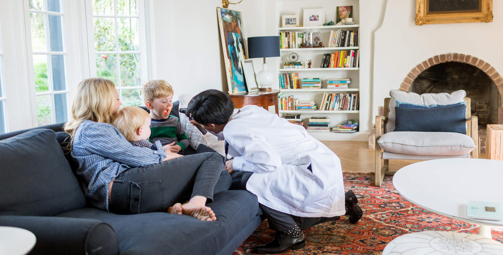

HermaMed Center
HermaMed Center este o Clinică Medicală Privată cu o activitate de peste 15 ani vechime, ce acționează pe piața serviciilor medicale din Iași, în contract cu C.A.S. din anul 2004, oferind pacientilor consultatii GRATUITE impreuna cu diverse servicii si proceduri medicale in urmatoarele specialitati:
- Dermatologie
- Psihologie
- Medicina de familie
Program de lucru
| Program clinica |
| Luni - Vineri |
08:00 - 19:00 |
| Sambata |
08:00 - 15:00 |
| Duminica |
INCHIS |
| Centru medical permanenta |
| Luni - Vineri |
15:00 - 19:00 |
| Sambata |
24/24h |
| Duminca |
24/24h |